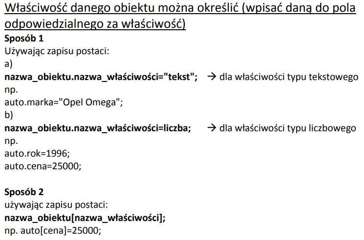
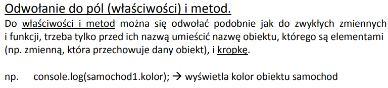
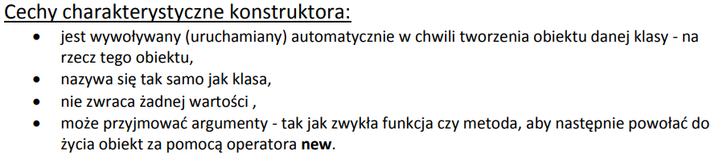
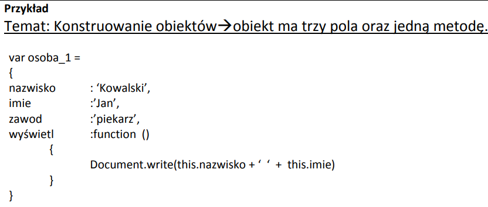
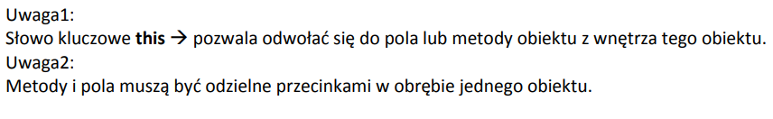
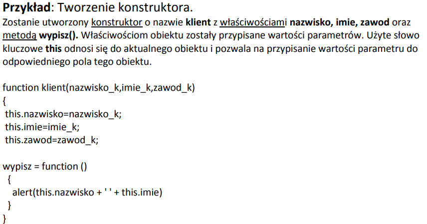
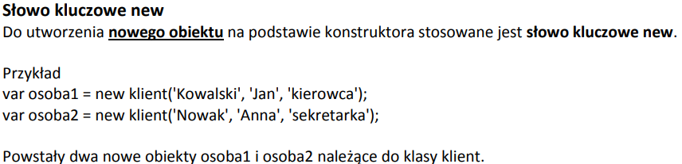
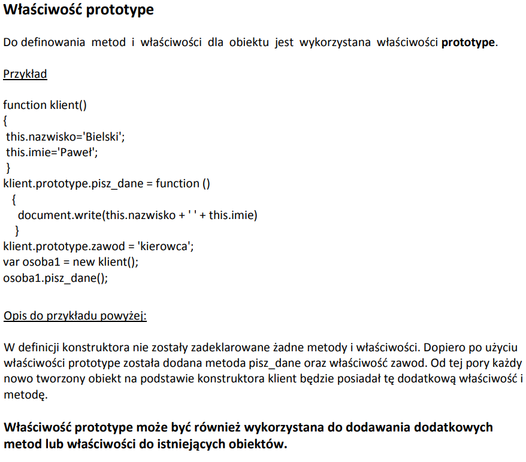

<html> <head> <link rel="stylesheet" type="text/css" href="zadanie29_gry.css"> </head> <body> <p class="glowny">1. W jaki sposób można określić właściwość danego obiektu ( dwa sposoby wraz z przykładami)? (odpowiedź poniżej)</p><br> <br> <p class="glowny">2. W jaki sposób można odwołać się do pól (właściwości) i metod? (odpowiedź poniżej)</p><br> <br> <p class="glowny">3. Wymień cechy charakterystyczne konstruktora. (odpowiedź poniżej)</p><br> <br> <p class="glowny">4. Konstruowanie obiektu na podstawie przykładu -> obiekt ma trzy pola oraz jedną metodę</p><br> <br> <p class="glowny">5. Znaczenie słowa this. Jak oddzielamy pola oraz metody? (odpowiedź poniżej)</p><br> <br> <p class="glowny">6. Konstruktor w JS na podstawie przykładu wraz z opisem.</p><br> <br> <p class="glowny">7. Znaczenie słowa kluczowego New wraz z przykładem.</p><br> <br> <p class="glowny">8. Znaczenie słowa kluczowego prototype wraz z przykładem i opisem ( szczególnie ważny tekst pogrubiony).</p><br> <br> </body> </html>